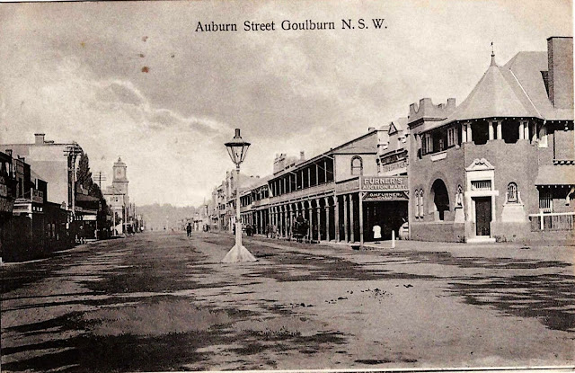

From our founding to today — a record of God's faithfulness to this congregation and community.
The story of Queanbeyan Presbyterian Church is the story of ordinary people gathered around an extraordinary gospel. From the earliest gatherings of settlers, through the building of our church premises, to the congregation worshipping today — this is a story worth telling.
The Reverend William Hamilton — a graduate of the University of Glasgow — arrives at Goulburn as the first regular Presbyterian minister in the south. Despite the gruelling three-day coach journey from Sydney, he immediately begins reaching out to isolated Scottish settlers across the district, including those at Duntroon and the Limestone Plains.

Rev. Hamilton conducts the first known Presbyterian service in the Queanbeyan district at "Ginninginindery, Piagalo or Limestone Plains." He notes his reception is initially cool, but by the following year records that he is "making progress in exciting an interest in their national church among the Scottish residing there." The congregation is mostly made up of the ~70 Scottish families Charles Campbell of Duntroon has brought out from Scotland to work his 24,000-acre estate — the Camerons, McIntoshes, McPhersons, McDonalds, McInnes and others.
Denominational factionalism has so fractured colonial Presbyterianism that Hamilton — who had led attempts to prevent the breach — moves to Victoria. His departure is marked by a remarkable petition signed by 107 congregation members spread across Goulburn, Berrima, Queanbeyan and Yass, urging him to remain. The petition still exists. His leaving leaves the Queanbeyan district without a settled minister for years.
The Reverend William Ritchie, residing in Yass, travels to Queanbeyan to hold services four times a year — meeting in the old Kent Hotel. It is during his ministry that the congregation secures the land grant at Morisset & Lowe Streets.
The local Presbyterian community secures a Crown grant of four allotments — two for the church, one for a school, one for the manse fronting Lowe Street. The grant is not formally gazetted until 13 December 1859. These remain the addresses of the church and manse today.
Dr Andrew Morton, a local medical practitioner, convenes a meeting to initiate construction. A subscription list opens and £400 is pledged by May 1862 — but the effort stalls. The congregation is troubled partly due to the influence of the controversial Rev. John Dunmore Lang, and cannot find a minister willing to settle permanently.
After nearly a decade of stalled progress, the Reverend William Mackenzie arrives virtually direct from Scotland and reinvigorates the congregation and the building project. Formally inducted on 29 June 1870, his brother Rev. Simon Mackenzie of Goulburn immediately raises a further £275 in pledges — including £100 from Charles McKeahnie and £50 from Dr Morton. Mackenzie also fosters the building of Presbyterian churches at Canberra and Bungendore.
The Building Committee engages the Reverend Alberto Dias Soares — the local Anglican Rector and Honorary Diocesan Architect of the Diocese of Goulburn — who offers his services gratis. His initial design is presented on 20 October 1871. At the congregation's request, decorative buttresses are added (purely ornamental, costing an extra £100 covered by four donors). This is the only Presbyterian church Soares ever designed.
Elizabeth McKeahnie (wife of Charles McKeahnie) lays the foundation stone at a public ceremony. Tenders had been called in February and April 1872; Thomas Priest wins the masonry, Thomas Jordan the main carpentry. John Kealman — a congregation member and skilled builder — is separately engaged for window frames, pews, interior fittings, and the picket fence. He personally designs and donates the pulpit free of charge.
Add a photo of the foundation stone or early church
The church opens for its first service — still incomplete. All ten lancet windows are covered in calico (the stained glass hasn't arrived), a rough paling fence stands in for the unfinished picket fence, and seating is borrowed from the Courthouse and the Methodist Church. Despite this, the congregation has cleared all construction costs of £583. Rev. Dr. Steel opens the service with Genesis 28:22 — "And this stone which I have set for a pillar shall be God's house" — the text that gives the church's centenary history its title. Thomas Priest's stonework is described as "superior to anything of the class in the district."
The original donated bell proves inadequate. Two women of the congregation anonymously purchase a larger, finer-toned replacement, installed on 25 April 1874. Kealman completes the picket fence. The church now has its low bell-tower and zinc-sheathed spire — though building secretary John Gale describes the tower as having a "paltry appearance" compared to what was originally envisaged.
Add an early exterior photo of St Stephen's
Rev. Robert Alexander Steel is appointed in May 1881 — but there is no manse, so his family (including wife Amy, eldest daughter of NSW Colonial Architect James Barnet) must live in Bungendore. Barnet designs a six-room brick cottage free of charge for his daughter. John Kealman builds it in 1883. The manse is the only surviving private domestic building of the three Barnet ever designed outside his government work. Steel's ministry continues for nearly seventeen years, until 1897.
The congregation acquires its first reed organ. It is replaced by a better instrument in 1904, then in August 1913 with a more elaborate Estey organ — featuring philharmonic reeds and sixteen stops. The 1913 Estey organ remains in the church today and is still in working order.
A January 1896 storm destroys the original circular quatrefoil window. A replacement stained glass window is commissioned depicting the burning bush — the symbol of the Presbyterian Church — with the Latin inscription nec tamen consumebatur ("and yet it was not consumed"). Made of 394 individual pieces of glass, each handled six times during manufacture, it is unveiled on 31 May 1896 by Amy Steel, wife of the minister.
Add a photo of the burning bush window
Less than a year after unveiling the burning bush window, Amy Steel — wife of Rev. Steel, daughter of James Barnet, and devoted member of the congregation for sixteen years — dies at just 40 years of age. Her passing is deeply felt by the congregation she helped build.
At the 50-year jubilee of the Queanbeyan Presbyterian charge, a stained glass window is donated in Amy Steel's memory — bearing a Greek cross, Anchor Cross, IHS monogram, and Revelation 2:10: "Be thou faithful unto death and I will give thee a crown of life." Unveiled by Amy's daughter Ruby (now wife of incumbent minister Rev. E. Sydney Henderson). A memorial tablet is erected above the pulpit, and Charles Henry McKeahnie presents a baptismal font of Oamaru limestone from New Zealand.
Add a photo of the memorial window or interior
The original zinc-sheathed spire on the southwestern bell-tower is destroyed in high winds. A replacement is constructed and installed in 1956, maintaining the familiar silhouette of the building that has stood since 1874.
The congregation marks 100 years since the church's opening. Jan Armour writes And This Stone: The Story of St Stephen's Presbyterian Church, Queanbeyan — a detailed parish history drawing on congregational records and the Queanbeyan Age. A digitised copy is held by Camden Theological Library and can be viewed at illuminate.recollect.net.au.
Add a centenary photo or book cover
When the Congregational, Methodist and most Presbyterian churches in Australia unite to form the Uniting Church, QPC chooses to remain within the Presbyterian Church of Australia — holding to the Reformed faith and the Westminster Confession. It is one of the most consequential decisions in the congregation's history.
St Stephen's Presbyterian Church and Manse are listed on the NSW State Heritage Register — recognised as "a small, intact and harmonious ecclesiastical precinct" of state significance. The assessment notes the church as the only non-Anglican building designed by Soares, and the Manse as the only surviving private domestic building by Colonial Architect James Barnet.
The congregation refreshes its public identity around three core commitments: Reflecting Christ, Refreshing Believers, Reaching Friends — a mission statement connecting a nearly 190-year-old congregation to the Queanbeyan of today.
Add a congregation photo here
QPC continues to gather in the same building that opened on 8 March 1874 — on the same land granted in 1852. The pulpit John Kealman built and donated still stands. The burning bush window still catches the light. The 1913 Estey organ still plays. And the gospel still goes out, Sunday by Sunday.
Add a current building photo here
Today QPC is a warm, growing congregation deeply rooted in Reformed theology and committed to the people of Queanbeyan. We meet twice each Sunday morning with a full programme of ministries throughout the week.
We are part of the Presbyterian Church of Australia — one of the few denominations that held firm to biblical orthodoxy through the 20th century — and we carry that heritage with gratitude and conviction.
Explore Our Ministries →Subscribe to the podcast and get new sermons automatically every week — on Spotify, Apple Podcasts, or any podcast app.
Listen on Spotify